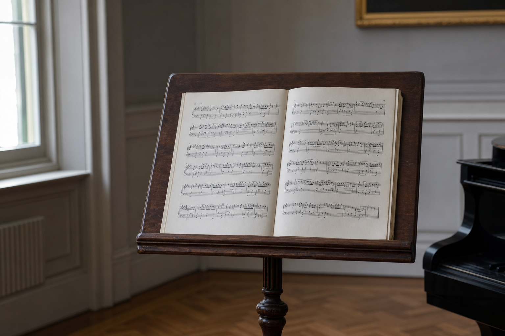

خصوصی / گروهی
پیانو کلاسیک
گامبهگام با تمرکز بر ریتم، سلفژ و رپرتوار کلاسیک و پاپ؛ مناسب کودکان و بزرگسالان.
آموزشگاه موسیقی باورستان
آموزش ساختیافته برای والدین و هنرجویان بزرگسال؛ با اساتید حرفهای در قلب تهران.
ترم تابستان ثبتنام از ۱۵ تیر فعال است. ظرفیت کلاسهای خصوصی محدود است.
همین حالا ثبتنام کنیداز مبتدی تا پیشرفته؛ تئوری، تکنیک و اجرای قطعات در یک مسیر مشخص.
خصوصی / گروهی
گامبهگام با تمرکز بر ریتم، سلفژ و رپرتوار کلاسیک و پاپ؛ مناسب کودکان و بزرگسالان.
کلاسیک و پاپ
از اولین آکورد تا اجرای قطعات مورد علاقه، با کار روی ریتم، تکنیک و اجرای گروهی.
استاندارد بینالمللی
دستگیری صحیح، آرشهکشی، اینتونیشن و رپرتوار استاندارد برای مسیر جدی نوازندگی.
با همراهی پیانو
تنفس، وسعت صدا، بیان احساسی و اجرای قطعات انتخابی روی صحنه یا در استودیو.
مکمل همه سازها
نُتخوانی، ریتمخوانی و پایههای هارمونی برای فهم عمیقتر موسیقی.
۴ تا ۸ سال
ریتم، بازی و حرکت در محیطی آرام و هدایتشده برای ورود درست کودک به موسیقی.
از اولین تماس تا اجرای روی صحنه، مراحل روشن و قابل پیگیری است.
سطح، علاقه و زمان مناسب شما را مشخص میکنیم.
استاد، مدت جلسات و اهداف ترم را با هم تنظیم میکنیم.
هر جلسه با تکلیف روشن و پیگیری پیشرفت همراه است.
کنسرت هنرجویی، ضبط اجرا یا آمادگی آزمونهای معتبر.
مدرسین با تجربه تدریس، اجرا و آمادهسازی برای آزمون و صحنه.
پیانو و تئوری موسیقی
فارغالتحصیل کارشناسی موسیقی با بیش از ۱۰ سال تدریس پیانو کلاسیک و آمادهسازی آزمونهای ABRSM.
گیتار و آواز پاپ
نوازنده و خواننده پاپ با تمرکز بر اجرای صحنهای، ریتمخوانی و اجرای قطعات روز.
ویولن و موسیقی کودک
متخصص متد اورف؛ طراحی کلاسهایی که کودک را با نظم و لذت به دنیای موسیقی نزدیک میکند.

محیط درست، برنامه روشن و استاد همراه؛ همین سه چیز مسیر یادگیری را از حدس و گمان خارج میکند.
پاسخ کوتاه به سوالهایی که والدین و هنرجویان معمولاً میپرسند.
بله. بیشتر هنرجویان ما مبتدی هستند و برنامه از پایه طراحی شده است.
حدود ۲۰ تا ۳۰ دقیقه؛ برای آشنایی با فضا، استاد و سطح تقریبی شما.
موسیقی کودک از ۴ سال؛ سازهایی مثل پیانو و ویولن معمولاً از ۶–۷ سال.
تا حد امکان بله؛ برنامه با توجه به مدرسه، دانشگاه یا شغل شما تنظیم میشود.
فرم را تکمیل کنید تا مناسبترین دوره را بر اساس سن، سطح و علاقه پیشنهاد دهیم.